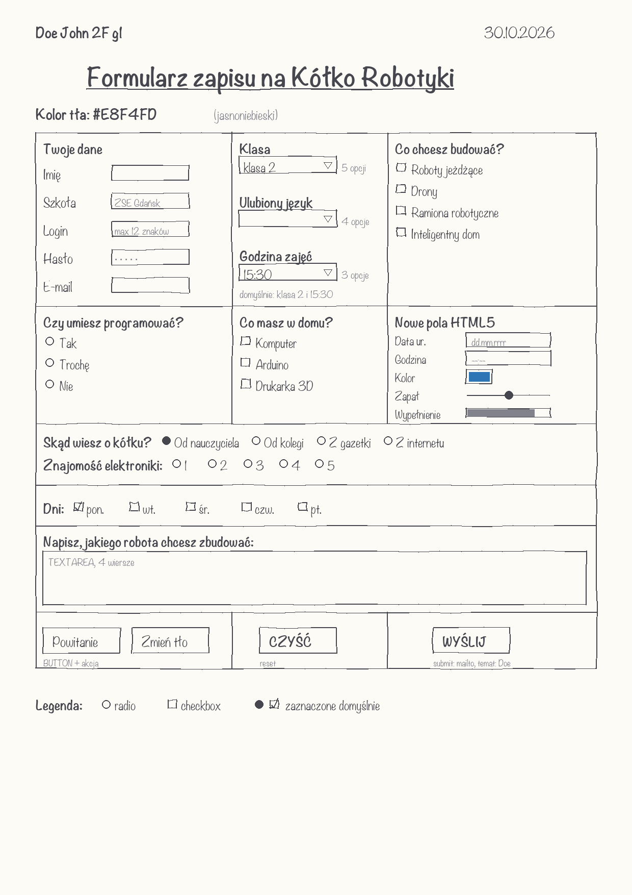

Zadanie 10 z 11
Projekt formularza na kartce
To zadanie nie zmienia strony. Formularz projektujesz ołówkiem i linijką na kartce A4. Zrób zdjęcie projektu: w zadaniu 11 zbudujesz z niego formularz w HTML. Folder zadanie10 ma tylko dodatkowo zdjęcie projektu.
Co trzeba zrobić
- Narysuj projekt na jednej kartce A4, ołówkiem i linijką. Podpisz: nazwisko, klasa, grupa i data.
- Temat musi być inny niż przykłady z instrukcji.
- Tytuł: „Formularz …”, na przykład „Formularz zapisu na Kółko Robotyki”.
- Kolor tła jako napis w kodzie szesnastkowym, na przykład „Kolor tła: #E8F4FD”.
- 5 pól tekstowych INPUT: puste, z tekstem początkowym, z limitem znaków, z hasłem i drugie puste.
- 3 listy SELECT: 5 opcji z domyślną, 4 opcje bez domyślnej, 3 opcje z domyślną.
- 3 grupy checkbox: 4 pionowo, 3 pionowo, 5 poziomo z jednym zaznaczonym.
- 3 grupy radio: 4 poziomo z jednym zaznaczonym, 3 pionowo, 5 poziomo.
- Pole TEXTAREA na dłuższy tekst.
- Co najmniej 2 przyciski BUTTON z dowolną akcją.
- Przycisk reset z napisem CZYŚĆ i przycisk submit z napisem WYŚLIJ. Wysyła dane na adres nauczyciela, temat to nazwisko ucznia.
Gotowy projekt


Jak projekt spełnia wymagania
| Wymaganie | W projekcie |
|---|---|
| Podpis | „Doe John 2F g1” i data w górnej linii kartki. |
| Tytuł i tło | „Formularz zapisu na Kółko Robotyki”, „Kolor tła: #E8F4FD”. |
| 5 pól INPUT | Imię (puste), Szkoła („ZSE Gdańsk”), Login (max 12 znaków), Hasło, E-mail (puste). |
| 3 listy SELECT | Klasa (5 opcji, domyślnie „klasa 2”), Ulubiony język (4 opcje), Godzina zajęć (3 opcje, domyślnie 15:30). |
| 3 grupy checkbox | „Co chcesz budować?” 4 pionowo, „Co masz w domu?” 3 pionowo, „Dni” 5 poziomo z zaznaczonym poniedziałkiem. |
| 3 grupy radio | „Skąd wiesz o kółku?” 4 poziomo z zaznaczonym „Od nauczyciela”, „Czy umiesz programować?” 3 pionowo, „Znajomość elektroniki” 1–5 poziomo. |
| TEXTAREA | „Napisz, jakiego robota chcesz zbudować”, 4 wiersze. |
| 2 przyciski BUTTON | „Powitanie” pokazuje okienko, „Zmień tło” zmienia kolor strony. |
| reset i submit | CZYŚĆ i WYŚLIJ. Wysyłanie: mailto, temat „Doe”. |
Rysuj od razu siatkę tabeli. W zadaniu 11 formularz stoi w tabeli. Gdy na kartce są już wiersze i kolumny, w HTML przepisujesz je komórka po komórce. Ten projekt ma 3 kolumny i 6 wierszy, a wiersze 3–5 zajmują całą szerokość (colspan="3").
Pola HTML5 (data, godzina, kolor, suwak, pasek postępu) nie są wymagane w projekcie. Etap 7 zadania 11 ich wymaga, więc warto zostawić na nie miejsce.
Co się zmieniło w kodzie
Plik index.html jest taki sam jak po zadaniu 9.
Nowe pliki w folderze
projekt_formularza_doe.png
Pełny kod index.html po zadaniu 10
Pokaż kod
<!DOCTYPE html> <html lang="pl"> <head> <meta charset="UTF-8"> <meta name="author" content="John Doe"> <meta name="description" content="Strona ucznia John Doe - zadania HTML"> <title>John Doe - zadania HTML</title> </head> <!-- Autor: Doe John, szkoła: ZSE Gdańsk, klasa: 2F grupa 1 --> <body style="background-color: #CCFFCC;"> <a href="walidacja_doe.html">Walidacja strony - zadanie 7</a> <span id="poczatek"></span> <p><b>Menu - góra strony</b></p> <a href="poczta_doe.html">Link do poczty</a><br> <a href="plik_doe.html">Link do ściągania pliku</a><br> <a href="#srodek">Link do środka tekstu</a><br> <a href="#koniec">Link do końca tekstu</a><br> <a href="tabela_doe.html">Link do strony zawierającej tabelę</a><br> <a href="formularz_doe.html">Link do strony zawierającej formularz</a><br> <!-- imię 7 razy; numer w dzienniku 7 (nieparzysty), więc od size 7 do size 1 --> <p style="text-align: right;"><span style="color: blue; font-size: 48px; font-family: 'Arial';"><b>John</b></span></p><br> <p style="text-align: left;"><span style="color: blue; font-size: 32px; font-family: 'Verdana';"><i>John</i></span></p><br> <p style="text-align: center;"><span style="color: navy; font-size: 24px; font-family: 'Times New Roman';"><u>John</u></span></p><br> <p style="text-align: right;"><span style="color: purple; font-size: 18px; font-family: 'Courier New';"><s>John</s></span></p><br> <p style="text-align: left;"><span style="color: teal; font-size: 16px; font-family: 'Arial';">John</span></p><br> <p style="text-align: right;"><span style="color: maroon; font-size: 13px; font-family: 'Verdana';">John</span></p><br> <p style="text-align: center;"><span style="color: olive; font-size: 10px; font-family: 'Times New Roman';">John</span></p><br> <!-- nazwisko 6 razy; numer nieparzysty, więc od H6 do H1 --> <h6>Doe</h6><br> <h5>Doe</h5><br> <h4>Doe</h4><br> <h3>Doe</h3><br> <h2>Doe</h2><br> <h1>Doe</h1><br> <!-- sześć emotikonów: każdy inny kolor, wielkość i czcionka --> <p><span style="color: orange; font-size: 32px; font-family: 'Courier New';">:-) uśmiech, jestem zadowolony</span></p><br> <p><span style="color: red; font-size: 24px; font-family: 'Times New Roman';">:-( smutek, coś poszło źle</span></p><br> <p><span style="color: green; font-size: 18px; font-family: 'Verdana';">;-) mrugnięcie, to był żart</span></p><br> <p><span style="color: blue; font-size: 16px; font-family: 'Courier New';">:-D głośny śmiech</span></p><br> <p><span style="color: purple; font-size: 24px; font-family: 'Verdana';">:-P pokazuję język</span></p><br> <p><span style="color: brown; font-size: 18px; font-family: 'Times New Roman';">:-O zdziwienie</span></p><br> <!-- zadanie 2: dane ucznia (fałszywe, ale prawdopodobne) --> <p style="text-align: right;"><span style="color: red; font-size: 16px; font-family: 'Arial';"><u>80-188 Gdańsk, ul. Długa 12/5</u></span></p><br> <p style="text-align: left;"><span style="color: blue; font-size: 18px; font-family: 'Verdana';"><b>Ulubiony aktor: Tom Hanks</b></span></p><br> <p style="text-align: center;"><span style="color: green; font-size: 24px; font-family: 'Times New Roman';"><i>Ulubiony zespół: Queen</i></span></p><br> <p style="text-align: right;"><span style="color: purple; font-size: 16px; font-family: 'Courier New';"><s>Data urodzenia: 14 marca 2009</s></span></p><br> <p style="text-align: left;"><span style="color: black; font-size: 18px; font-family: 'Arial';">Wzór kwasu: H<sub>2</sub>SO<sub>4</sub></span></p><br> <p style="text-align: left;"><span style="color: black; font-size: 18px; font-family: 'Arial';">Potęga: x*x=x<sup>2</sup></span></p><br> <!-- zadanie 3: 10 spacji niełamliwych między nazwiskiem a imieniem --> <p>Doe John</p> <span id="srodek"></span> <p><b>Menu - środek strony</b></p> <a href="poczta_doe.html">Link do poczty</a><br> <a href="plik_doe.html">Link do ściągania pliku</a><br> <a href="#poczatek">Link początek tekstu</a><br> <a href="#koniec">Link do końca tekstu</a><br> <a href="tabela_doe.html">Link do strony zawierającej tabelę</a><br> <a href="formularz_doe.html">Link do strony zawierającej formularz</a><br> <!-- zadanie 3: dowcipy w obramowaniu z legendą --> <h1 style="text-align: right;">Dowcipy o informatykach</h1> <fieldset> <legend>Programista w sklepie</legend> <img src="grafika1.gif" style="float: right; border: 24px solid #336699; margin: 4px;" width="114" height="107" alt="grafika1-Doe"> Żona mówi do programisty:<br> - Kup chleb, a jak będą jajka, to weź dziesięć.<br> Programista wraca z dziesięcioma chlebami.<br> - Dlaczego tyle chleba?<br> - Bo były jajka.<br> </fieldset> <fieldset> <legend>Restart</legend> <img src="grafika2.gif" style="float: left; border: 13px solid #336699; margin: 4px;" width="103" height="103" alt="grafika2-Doe"> Uczeń pyta informatyka:<br> - Co robić, gdy komputer nie działa?<br> - Wyłącz i włącz.<br> - A jak dalej nie działa?<br> - Wyłącz i idź na spacer.<br> </fieldset> <hr style="height: 2px; width: 80%; background-color: red; border: none;"> <h2 style="text-align: left;">Dowcipy o szkole</h2> <fieldset> <legend>Klasówka</legend> <img src="grafika3.gif" style="float: right; border: 17px solid #336699; margin: 4px;" width="107" height="114" alt="grafika3-Doe"> Nauczyciel:<br> - Jasiu, dlaczego masz pustą kartkę?<br> - Bo nie lubię ściągać.<br> </fieldset> <fieldset> <legend>Zadanie domowe</legend> <img src="grafika4.gif" style="float: left; border: 13px solid #336699; margin: 4px;" width="103" height="103" alt="grafika4-Doe"> - Gdzie jest twoje zadanie domowe?<br> - Zjadł je mój pies.<br> - Przecież nie masz psa.<br> - To był pies kolegi.<br> </fieldset> <hr style="height: 6px; width: 50%; background-color: blue; border: none;"> <h3 style="text-align: center;">Dowcipy o zwierzętach</h3> <fieldset> <legend>Kot i mysz</legend> <img src="grafika5.gif" style="float: right; border: 14px solid #336699; margin: 4px;" width="104" height="104" alt="grafika5-Doe"> Dlaczego kot siedzi przy komputerze?<br> Bo pilnuje myszy.<br> </fieldset> <hr style="height: 10px; width: 30%; background-color: green; border: none;"> <!-- zadanie 4: wyliczenia i numerowania o informatyce --> <br><br><br> <h1>Poniżej są trzy wyliczenia z różnymi znakami wyliczenia</h1> <ul style="list-style-type: square;"> <li>procesor</li> <li>pamięć RAM</li> <li>dysk SSD</li> </ul> <ul style="list-style-type: disc;"> <li>klawiatura</li> <li>mysz</li> <li>monitor</li> </ul> <ul style="list-style-type: circle;"> <li>Windows</li> <li>Linux</li> <li>macOS</li> </ul> <br><br><br> <h2>Poniżej są trzy numerowania z różnymi znakami numerowania</h2> <!-- numeracja zaczyna się od numeru w dzienniku: 7 --> <ol type="1" start="7"> <li>HTML</li> <li>CSS</li> <li>JavaScript</li> </ol> <ol type="A" start="7"> <li>router</li> <li>switch</li> <li>serwer</li> </ol> <ol type="I" start="7"> <li>Chrome</li> <li>Firefox</li> <li>Edge</li> </ol> <br><br><br> <h3>Poniżej są trzy poziomy numerowania/wyliczenia</h3> <ol type="1"> <li>Sprzęt <ul style="list-style-type: square;"> <li>Podzespoły <ol type="a"> <li>płyta główna</li> <li>karta graficzna</li> </ol> </li> <li>Urządzenia peryferyjne <ol type="a"> <li>drukarka</li> <li>skaner</li> </ol> </li> </ul> </li> <li>Oprogramowanie <ul style="list-style-type: square;"> <li>Systemy operacyjne <ol type="a"> <li>Windows</li> <li>Linux</li> </ol> </li> </ul> </li> </ol> <span id="koniec"></span> <p><b>Menu - dół strony</b></p> <a href="poczta_doe.html">Link do poczty</a><br> <a href="plik_doe.html">Link do ściągania pliku</a><br> <a href="#poczatek">Link początek tekstu</a><br> <a href="#srodek">Link do środka tekstu</a><br> <a href="tabela_doe.html">Link do strony zawierającej tabelę</a><br> <a href="formularz_doe.html">Link do strony zawierającej formularz</a><br> <!-- zadanie 3: 7 znaków specjalnych na końcu strony --> <p>© ® ™ € § ♥ ¶</p> </body> </html>